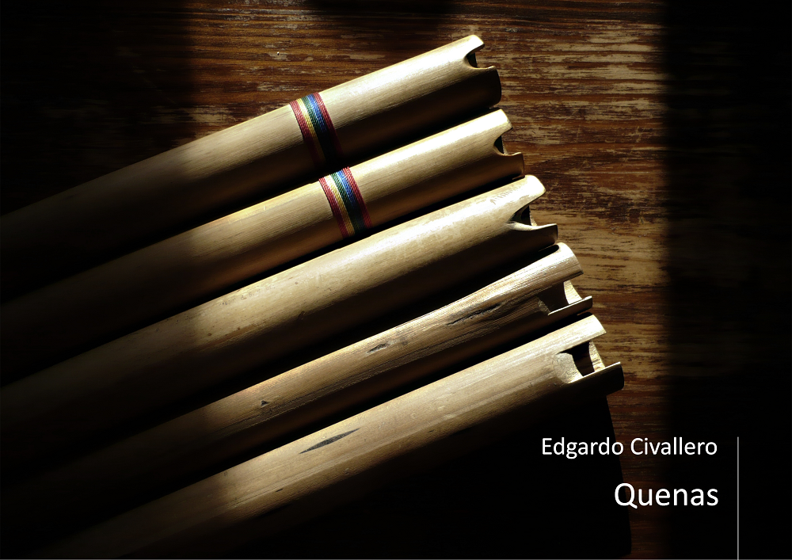

Quenas: An initial approach
Home > Digital books on music. Series 1 > Quenas: An initial approach
How to cite this work: Civallero, Edgardo (2025). Quenas: An initial approach. Archive edition. Bogota: El Zorro de Abajo Editora.
Archive edition, 2025 (El Zorro de Abajo Editora).
Download in PDF.
This book constitutes a rigorous investigation of one of the most emblematic instruments of the Andean sound world. Through an organological, historical, archaeological, and ethnographic approach, the text reconstructs the material and symbolic trajectories of the flutes without an insufflation duct that have accompanied, for centuries, the ritual, agricultural, and festive expressions of Andean communities. Based on extensive bibliographic and field documentation, the work offers an overview that ranges from the earliest pre-Hispanic remains to contemporary variants of professional and rural quenas.
The quena — also known as qina, kena, khena, or k'ena — is defined as an open vertical flute, without an air duct, that produces sound by directing the breath onto an edge carved directly into the mouthpiece. It is an instrument that requires a precise technique, based on the control of airflow and embouchure, and allows for a very broad expressiveness, from rough, trembling tones to clear and penetrating registers. Its body, usually made of cane, may have between four and eight finger holes, and a variable length of twenty to forty centimeters. Longer specimens, measuring forty or fifty centimeters, produce deep and resonant tones, while shorter ones reach bright, high registers.
The study explores the historical origins of the instrument in depth and demonstrates that quenas existed in the Americas thousands of years before European arrival. It examines archaeological finds of pre-Columbian flutes made of bone, ceramic, stone, gold, or wood in Chavín, Nazca, Recuay, Tiwanaku, Sicán, Chimú, and Chincha contexts, and shows that, although edges and fingerings vary, they all respond to the same technical principle: the direct production of sound through the contact of air with a sharp edge. The earliest documentary mentions of the instrument in the seventeenth century are reviewed: Ludovico Bertonio (1612) defines the term quena quena in his Vocabulario de la lengua aymara; Guamán Poma de Ayala and Bernabé Cobo record it as a flute of song and lament; and the chronicles of eighteenth- and nineteenth-century travelers describe its presence in rural festivities and agricultural dances.
The book then analyzes the different families of traditional and contemporary quenas. The large quenas include the Aymara ensembles of the Bolivian and Peruvian altiplano: pusipías, choquelas, lichiguayos, and quena quenas. These are large flutes, accompanied by wank'ara bass drums and played in tropas. Their melodies, made up of broad and repetitive intervals, generate a choral texture in which each flute player contributes one voice to the collective sonic fabric. At the opposite end, the small quenas, found from Potosí to Cusco and Huamanga, preserve local non-tempered tunings and are performed in agricultural, pastoral, or funerary contexts. Each variant responds to a specific ecological environment: the karhuani or quena of the llama herders of La Paz, the viticheña of the valleys of Potosí, the lawata of Cusco, the phalawata of Canchis, and the yura of Potosí are unique instruments, linked to dances and ceremonies that mark the agricultural calendar.
The text also addresses the modern transformations of the instrument. Since the mid-twentieth century, the quena has been incorporated into popular music, commercial folklore, and academic music. Quenas standardized in G major or A major, with fixed measurements and chromatic fingerings, became established as "professional" instruments, adapted to the Western tempered scale. These contemporary quenas are compared with traditional ones, noting that the acoustic precision and technical versatility they gained nevertheless involved a symbolic and ritual loss. While rural quenas remain cyclical instruments, linked to climate and territory, professional ones are stable objects, stripped of temporality and context. This tension between musical utility and communal meaning defines the modern conflict of Andean culture in the face of globalization.
Finally, the book analyzes the extensions of the family: the quenacho, a low-pitched version tuned in C or D major; the mamaquena, with an even lower register; and the quenilla or quenali, its high-pitched counterpart. All preserve the basic morphology, while adapting the instrument to different repertoires and scales.
The quena is not only a flute, but a language and a form of knowledge, a technology of breath that translates the bond between body, landscape, and cosmos. Its history embodies the persistence of a sonic aesthetic proper to the Andean world, in which air becomes a medium of communication between earth and sky, and where each note is a way of remembering, invoking, and resisting.